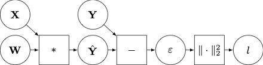

Towards AD in Julia: Composition of Rules (to-be-updated)
Prerequisites: Algorithmic Differentiation.
In Mooncake.jl's Rule System we discuss a generic mathematical model for a Julia function, and state what a rule to differentiate it in reverse-mode must do. Our goal, however, is to implement an algorithm which produces rules for functions which we do not already have rules for. This section explains the mathematical model required to know how to do this.
A Motivating Example
By the end of this section we will understand why, for the following function:
function f(x, y)
a = g(x)
b = h(a, y)
return b
endthe following rule is a correct implementation of reverse-mode AD for it:
function r(f, x, y)
a, adj_g = r(g, x)
b, adj_h = r(h, a, x, y)
function adj_f(db)
_, da, dx, dy = adj_h(db)
_, dx2 = adj_g(da)
dx = Mooncake.increment!!(dx, dx2)
return NoRData(), dx, dy
end
return b, adj_f
endObserve that the above rule essentially does the following:
- fowards-pass: replace calls to rules.
- reverse-pass: run adjoints in reverse order, adding together rdata when a variable is used multiple times.
This way of writing rules is the essence of the "A" in "AD". This page is therefore dedicated to building up to this example via a sequence of increasingly general examples. Once we have this, extending it to a very general class of Julia functions is comparatively straightforward.
We shall adopt the following approach to each problem:
- specify class of
functions, - specify class of differentiable functions used to model these
functions, - specify how to find the adjoints of this differentiable model, and
- describe a rule system which implements these adjoints.
At a high level, you can think of this approach as first "mathematising" the problem, applying the techniques developed in Algorithmic Differentiation to determine what it is that AD must do, and then providing an outline for implementing this model as a computer programme.
Part 1: Simple Compositions of Pure Functions
For this class of functions, the translation between the Julia function and differentiable function used to model it is almost trivial. We ask for patience, and promise that the modelling task will become more interesting shortly!
function Class
To start with, let us consider only functions which are pure (free of externally-visible side effects, such as the modification of their arguments of global variables), unary (single-argument), and don't contain any data themselves (e.g. no closures or callable structs). For example, consider:
g:
g(x::Vector{Float64}) = 2x TODO: pick a non-linear example!!!!
h:
h(x::Matrix{Float64}) = sum(x).
Composition
Let f be the composition of f_1, ..., f_N, a collection of N Julia functions which are pure and unary. This might be implemented as f(x) := f_N ∘ ... ∘ f_1, or perhaps
function f(x)
x_1 = x
x_2 = f_1(x_1)
...
return f_N(x_N)
endThere are many ways to implement this function.
Differentiable Model
We propose to represent any function f in this class by a differentiable function $f : \mathcal{X} \to \mathcal{Y}$.
g:
Let $\mathcal{X} = \mathcal{Y} =: \mathbb{R}^D$ where $D$ is length(x), and $f(x) := 2x$.
h:
Let $\mathcal{X} := \mathbb{R}^{P \times Q}$, and $\mathcal{Y} := \mathbb{R}$, where $P$ and $Q$ are the number of rows and columns in x, and $f(x) := \sum_{p,q} x_{p,q}$.
Composition:
Let $f_n : \mathcal{X}_n \to \mathcal{X}_{n+1}$ be the differentiable model for f_n. Then the differentiable model $f : \mathcal{X} \to \mathcal{Y}$ for f is $f := f_N \circ \dots \circ f_1$, with $\mathcal{X} := \mathcal{X}_1$ and $\mathcal{Y} := \mathcal{X}_{N+1}$.
Adjoints of Model
You can apply the tools developed in Algorithmic Differentiation to figure out the adjoints of g and h. The adjoint of f is also given there. Let $D f_n [x_n]^\ast$ be the adjoint of the derivative of $f_n$ at $x_n$, then the adjoint of $f$ at $x$ is just
\[D f [x]^\ast = D f_1 [x_1]^\ast \circ \dots \circ D f_N [x_N]^\ast.\]
Rules
For this simple class of functions, a simple rule system will do. We require that a rule for a function with mathematical model $f$ accepts the same argument as the original function, and returns a 2-tuple containing
- the result of applying the
functionto its input, and - another function which implements[implementing_mathematics_on_a_computer] the adjoint, i.e. $D f [x]^\ast$.
Given a rule for a function of interest, we simply run the rule, and can then apply the adjoint to any gradient vector of interest.
g:
function rrule(::typeof(g), x::Vector{Float64})
g_adjoint(ȳ::Vector{Float64}) = 2ȳ
return g(x), g_adjoint
endh:
function rrule(::typeof(h), x::Matrix{Float64})
h_adjoint(ȳ::Float64) = fill(ȳ, size(x))
return h(x), h_adjoint
endComposition:
One possible implementation for a rule for the composition of f_1, ..., f_N is
function rrule(::typeof(f), x)
x_1 = x
x_2, f_1_adjoint = rrule(f_1, x_1)
...
y, f_N_adjoint = rrule(f_N, x_N)
function f_adjoint(ȳ)
x̄_N = f_N_adjoint(ȳ)
...
x̄_1 = f_1_adjoint(x̄_2)
x̄ = x̄_1
return x̄
end
return y, f_adjoint
endYou should convince yourself that this does indeed return a 2-tuple satisfying the specification above.
Part 2: Functions of Pure Functions
The previous example demonstrated how we might treat a composition of pure functions of a single argument. Here, we extend this to pure functions of multiple arguments.
Class of functions
To see an example of this, consider the following computation graph:

It describes the loss function associated to linear regression, and might be written as Julia code in the following way:
function linear_regression_loss(W, X, Y)
Y_hat = X * W
eps = Y - Y_hat
l = dot(eps, eps)
return l
endAs before, in order to produce a precise mathematical model for this Julia function, we reduce it to the composition of elementary functions. However, in order to do so, we will have to be a little more creative in how we choose these functions.
Differentiable Mathematical Model
We model this function as a function $f$ defined as follows:
\[\begin{align} f :=&\, r \circ \varphi_3 \circ \varphi_2 \circ \varphi_1 \textrm{ where } \nonumber \\ \varphi_1(W, X, Y) :=&\, (W, X, Y, XW) \nonumber \\ \varphi_2(W, X, Y, \hat{Y}) :=&\, (W, X, Y, \hat{Y}, Y - \hat{Y}) \nonumber \\ \varphi_3(W, X, Y, \hat{Y}, \varepsilon) :=&\, (W, X, Y, \hat{Y}, \varepsilon, \|\varepsilon\|_2^2) \nonumber \\ r(W, X, Y, \hat{Y}, \varepsilon, l) :=&\, l \nonumber \end{align}\]
In words, our mathematical model for linear_regression_loss is the composition of four differentiable functions. The first three map from a tuple containing all variables seen so far, to a tuple containing the same variables and the value returned by the operation being modeled, and the fourth simple reads off the elements of the final tuple which were passed in as arguments, and the return value.
In general, we model the $n$th Julia function call with a function $\varphi_n$ mapping from a tuple of $D$ elements to a tuple of $D + 1$ elements, of the form
\[\varphi_n(x) := (x_1, \dots, x_D, g_n (a_n(x)))\]
for some differentiable function $g_n$, and "argument selector" function $a_n$. In words: each function call involves
- preparing the arguments to be passed to the function call, ($a_n$)
- calling the function ($g_n$), and
- adding a new variable to the list of in-scope variables (new tuple is of length $D + 1$).
For example, in the case of our example above,
\[\begin{align} &\varphi_1:\quad a_1(x) := (x_2, x_1) &\text{ and } \quad &g_1(A,B) := AB \nonumber \\ &\varphi_2:\quad a_2(x) := (x_3, x_4) &\text{ and } \quad &g_2(A,B) := A - B \nonumber \\ &\varphi_3:\quad a_3(x) := x_5 &\text{ and } \quad &g_3(A) := \|A\|_2^2 \nonumber \end{align}\]
Note that the argument to $a_1$ is a 3-tuple, to $a_2$ a 4-tuple, and to $a_3$ a 5-tuple. Crucially, observe that $f$ has exactly the same structure as $g_1$, $g_2$, and $g_3$ – it maps from the tuple containing its arguments to its return value. This gives us a recursive structure which is essential for making AD work.
$r$ always just maps from a tuple to the last element of that tuple.
Differentiating the Mathematical Model
Dropping the subscript $n$, functions such as $\varphi$ have derivative
\[D [\varphi, x] (\dot{x}) = (\dot{x}_1, \dots, \dot{x}_D, D [g \circ a, x] (\dot{x})).\]
Letting $\bar{y} := (\bar{y}_1, \dots \bar{y}_{D+1})$, we can perform the usual manipulations to find the adjoint of $D[\varphi, x]$:
\[\begin{align} \langle \bar{y}, D[\varphi, x](\dot{x}) \rangle &= \langle (\bar{y}_1, \dots, \bar{y}_{D+1}), (\dot{x}_1, \dots, \dot{x}_D, D[g \circ a, x](\dot{x})) \rangle \nonumber \\ &= \sum_{d=1}^D \langle \bar{y}_d, \dot{x}_d \rangle + \langle D[g \circ a, x]^\ast (\bar{y}_{D+1}), \dot{x} \rangle \nonumber \\ &= \langle (\bar{y}_1, \dots, \bar{y}_D), \dot{x} \rangle + \langle D[g \circ a, x]^\ast (\bar{y}_{D+1}), \dot{x} \rangle \nonumber \\ &= \langle (\bar{y}_1, \dots, \bar{y}_D) + D[g \circ a, x]^\ast (\bar{y}_{D+1}), \dot{x} \rangle. \nonumber \end{align}\]
So, what is $D[g \circ a, x]^\ast (\bar{y}_{D+1})$?. First let $z := a(x)$ and observe that $D[a, x] = a$ since $a$ is linear. It follows that
\[D[g \circ a, x]^\ast = (D[g, z] \circ D[a, x])^\ast = (D[g, z] \circ a)^\ast = a^\ast \circ D[g, z]^\ast .\]
Since $g$ has the same form as $f$, assume that we know $D[g, z]^\ast$ by induction. An expression for $a^\ast$, on the other hand, we obtain from its definition directly.
As discussed $a$ maps from a tuple containing all variables passed in to $f$, to the tuple which is to be passed to $g$. For example, suppose variables x_1, x_2, x_3 are in-scope, then a call of the form
g(x_2, x_1)has argument selector $a(x) := (x_2, x_1)$, andg(x_3, x_3)has argument selector $a(x) := (x_3, x_3)$,
where $x$ is a 3-tuple in both examples. The general form of an argument selector $a$ mapping from a $D$-tuple to an $N$-tuple is
\[a(x) = (x_{i_1}, \dots, x_{i_N})\]
for some set of integers $i_1, \dots, i_N \in \{1, \dots, D\}$. Let $z = (z_1, \dots, z_N)$, and $c_n(z)$ the $D$-tuple which is equal to $z_n$ at element $i_n$, and zero everywhere else. Then adjoint of $a$ is obtained in the usual manner:
\[\begin{align} \langle z, a^\ast (x) \rangle &= \langle (z_1, \dots, z_N), (x_{i_1}, \dots, x_{i_N}) \rangle = \sum_{n=1}^N \langle z_n, x_{i_n} \rangle = \sum_{n=1}^N \langle c_n(z), x \rangle = \langle \sum_{n=1}^N c_n(z), x \rangle, \nonumber \end{align}\]
from which we conclude
\[a^\ast(z) = \sum_{n=1}^N c_n(z). \nonumber\]
Applying this result to our previous examples, we see that
- when $a(x) := (x_2, x_1)$, $a^\ast (z) := (z_2, z_1, 0)$, and that
- when $a(x) := (x_3, x_3)$, $a^\ast (z) := (0, 0, z_1 + z_2)$.
Combining this result with the adjoint of the derivative of $\varphi$ yields
\[D[\varphi, x]^\ast (\bar{y}) = (\bar{y}_1, \dots, \bar{y}_D) + \sum_{n=1}^N c_n(D [g, z]^\ast (\bar{y})).\]
We must also find the derivative of the adjoint of $r$. It is linear, so it is its own derivative. Assume $f$ is of the form
\[f = r \circ \varphi_P \circ \dots \circ \varphi_1\]
and that its arguments are $N$-tuples. Then $r$ maps from $(N + P)$-tuples to a single value, and its adjoint is a tuple of length $N + P$ given by
\[r^\ast(\bar{y}) = (0, \dots, 0, \bar{y}_{N+1}).\]
Finally, the adjoint the derivative of $f$ is
\[D [f,x]^\ast = D[\varphi_1, x_1]^\ast \circ \dots \circ D [\varphi_P, x_P]^\ast \circ r^\ast\]
where $x_p := \varphi_{p-1}(x_{p-1})$ and $x_1 := x$. Since we now have expressions for all of the terms in this, we consider how to produce a programme which implements this adjoint.
Implementation
We start by revisiting our Julia function which computes the loss associated to linear regression, as it is easiest to start with a concrete example:
function f(W, X, Y)
Y_hat = X * W
eps = Y - Y_hat
l = dot(eps, eps)
return l
endLet the function rule map from a function and its arguments to a 2-tuple comprising the return value of that function, and a closure which computes the adjoint. The closure maps from a gradient vector, associated to the return value of the function, to a tuple containing the gradient vectors associated to each of the arguments to the function.
Assume that we have methods of rule for *, -, and dot, then a possible implementation of rule for f is
function rule(f, W, X, Y)
Y_hat, adjoint_mul = rule(*, X, W)
eps, adjoint_minus = rule(-, Y, Y_hat)
l, adjoint_dot = rule(dot, eps, eps)
function adjoint_f(dout)
# Implement adjoint of r. Assume that we have a way to produce zero gradients.
dl = dout
deps = zero_gradient(eps)
dY_hat = zero_gradient(Y_hat)
dY = zero_gradient(Y)
dX = zero_gradient(X)
dW = zero_gradient(W)
# Run adjoint of `dot`.
(deps_inc_1, deps_inc_2) = adjoint_dot(dl)
# Run adjoint of argument selector for the call to `dot`.
# Observe that the gradient w.r.t. `eps` gets incremented twice, because `eps`
# appears twice in the argument list to `dot`. This is consistent with the
# argument selector adjoint.
deps = deps + deps_inc_1
deps = deps + deps_inc_2
# Run adjoint of `-`.
(dY_inc, dY_hat_inc) = adjoint_minus(deps)
# Run adjoint of argument selector for the call to `-`.
dY = dY + dY_inc
dY_hat = dY_hat + dY_hat_inc
# Run adjoint of `*`.
(dX_inc, dW_inc) = adjoint_mul(dY_hat)
# Run adjoint of argument selector for the call to `*`.
dX = dX + dX_inc
dW = dW + dW_inc
# Return the gradients w.r.t. the arguments.
return dW, dX, dY
end
return l, adjoint_f
endAt a high-level, rule derivation in the general case proceeds as follows. First, replace all calls in the original function with calls to rules. Then define a closure which accepts a single argument. This closure first implements the adjoint of $r$, by assigning the argument to the closure to be the gradient of the primal return value, and setting the gradient of all other variables to zero. Subsequently, for each call in the primal function, in reverse order, apply the adjoint returned by the associated rule, and apply the adjoint of the argument selector associated to the call by incrementing the value of the gradients of its arguments. Finally, return a tuple containing the gradients w.r.t. each of the arguments to the primal function.
There are other equivalent ways to implement the above – see e.g. Zygote Implementation below. If nothing else, the derivations in this section provide a clear route to explain what goes on there.
At this point, we have enough to understand the bulk of many AD systems. If you squint, the above provides a good starting point from which to understand what Zygote.jl, ReverseDiff.jl, PyTorch, and JAX do, albeit each of these systems has their own particular way of achieving the above (JAX in particular). The defining property of each of these systems is that they (for the most part) involve pure-functions.
Part 3: Applying Sequences of Mutating Functions
Julia function can modify their inputs. For example, consider
function square!(x::Vector{Float64})
x .= x .^ 2
return nothing
endThis function mutates (modifies / changes) the values stored in each element of x. In order to model this kind of behaviour, we introduce the notion of state, as discussed in Mooncake.jl's Rule System. In general, we associate to a Julia function f! a differentiable function $f : \mathcal{X} \to \mathcal{X}$, defined such that if x is associated to value $x$ prior to running f!, it has value $f(x)$ after running f!. We call $f$ the transition function associated to f!. In the case of square!, the transition function is $f(x) = x \odot x$.
We first study functions of the following form:
function f!(x::Vector{Float64})
f_1!(x)
f_2!(x)
...
f_N!(x)
return nothing
endWe associate to each f_n! its transition function $f_n : \mathcal{X} \to \mathcal{X}$, where $\mathcal{X} := \mathbb{R}^D$ (assume for now that the length(x) is not modified by any of the operations). The transition function $f : \mathcal{X} \to \mathcal{X}$ associated to f! is simply
\[f := f_N \circ \dots \circ f_1\]
Therefore the adjoint of the derivative is
\[D[f, x]^\ast = D[f_1, x_1]^\ast \circ \dots \circ D[f_N, x_N]^\ast,\]
where $x_{n+1} := f_n(x_n)$ and $x_1 := x$ as usual. How might we implement this? The crucial difference from before is that we lose access to some (or perhaps all) of e.g. $x_n$ when we apply f_n! to put x into the state with value $x_{n+1}$. This is important in the case of square!. To see this, first note that the derivative of its transition function is $D[f, x](\dot{x}) = 2 x \odot \dot{x}$, with corresponding adjoint $D[f, x]^\ast(\bar{y}) = 2 \bar{y} \odot x$. The fact that $x$ appears in the adjoint expression means that we need access to the value that the programme variable x takes before running square!, but this is overwritten when we run square!. The same consideration applies to each f_n in f! – if the adjoints of their transition functions involve $x$, we need access to the value that x took at the point just before running f_n!.
We can solve this problem by insisting that the reverse-pass of a rule for a function return its arguments to the state that they were in prior to running the function, thus granting rules license to safely assume that all state is "as they left it" from the forwards-pass.
Under this framework, a rule for square! might be something like
function rule(::typeof(square!), x::CoDual{Vector{Float64}})
# Save current value of `x` for use in the reverse-pass.
x_copy = copy(primal(x))
# Run primal operation.
square!(x)
# On entry, x̄ is the gradient associated to the value of `x` after running `square!`.
function square!_reverse()
# Reset `x` to have the value it took before running the forwards pass.
primal(x) .= x_copy
# Modify gradient to correspond to result of adjoint of transition function.
tangent(x) .= 2 .* primal(x)
return nothing
end
return nothing, square!_reverse
endwhere CoDual{Vector{Float64}} is a struct containing the value associated to x, retrieved using primal(x), and memory into which its gradients can be written, retrieved using tangent(x). It has value equal to the input to the transition function before running the reverse-pass, and value equal to the application of the adjoint to this input after running the reverse-pass.
So to use the above rule to compute the adjoint of the transition function associated to square!, you might do the following:
- initialise
x = CoDual(x, zeros(x)), - compute
_, square!_reverse = rule(square!, x), - set
tangent(x)equal to the gradient you wish to use as the input to the adjoint of the transition function associated tosquare!, - run
square!_reverse, and - retrieve the gradient
tangent(x).
Notice that this has a distinctly different style to before. The forwards-pass happens through mutation of the argument x, and the reverse-pass happens entirely as a side-effect of running the closure square!_reverse.
Similarly, we can implement a rule for f! as follows:
function rule(::typeof(f!), x::CoDual{Vector{Float64}})
# Run forwards-pass.
_, f_1!_reverse = rule(f_1!, x)
_, f_2!_reverse = rule(f_2!, x)
...
_, f_N!_reverse = rule(f_N!, x)
# Define reverse-pass -- just run all rules in reverse.
function f!_reverse()
f_N!_reverse()
...
f_2!_reverse()
f_1!_reverse()
return nothing
end
# Return nothing, and the new rule.
return nothing, f!_reverse
endThis rule satisfies our requirement that all modifications to x are un-done by f!_reverse inductively – we assume that each f_n!_reverse satisfies this require.
Part 4: Computational Graphs of Mutating Functions
Part 5: Computational Graphs of Mutating Functions with Aliasing
Zygote Implementation
For example, rather than incrementing gradients immediately after calls to adjoints, Zygote.jl adds together the gradients of a variable immediately before the gradient is used. The implementation of adjoint produced by Zygote is, roughly speaking, something like
function rule(f, W, X, Y)
Y_hat, adjoint_mul = rule(*, X, W)
eps, adjoint_minus = rule(-, Y, Y_hat)
l, adjoint_dot = rule(dot, eps, eps)
function adjoint_f(dout)
# Implement adjoint of r. Assume that we have a way to produce zero gradients.
dl = dout
# Run adjoint of `dot`.
(deps_1, deps_2) = adjoint_dot(dl)
# Run adjoint of `-`.
deps = deps_1 + deps_2
(dY, dY_hat) = adjoint_minus(deps)
# Run adjoint of `*`.
(dX, dW) = adjoint_mul(dY_hat)
# Return the gradients w.r.t. the arguments.
return dW, dX, dY
end
return l, adjoint_f
endIt computes the same thing as discussed previously, but avoids redundant calls to zero_gradient and +.
- implementing_mathematics_on_a_computerput differently, suppose that someone wrote down some equations in a paper or textbook, and gave you a piece of code which they claim is an implementation of these equations (e.g. a neural network, a probabilistic model, an ODE, etc). Under what conditions would you be satisfied that the implementation was correct? We all do this in informal ways all of the time. I propose that you apply the same set of standards here: we have written down some equations for the adjoints, and are claiming that our rule system is an implementation of these. The fact that we arrived at this set of equations by modelling a computer programme is neither here nor there for this step of the process.